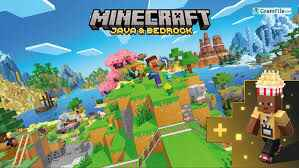
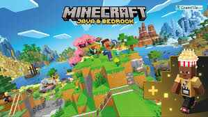

Minecraft Original Full Version Download
Minecraft Version 1.21.101
 

Download the latest, safest, and fastest Minecraft Bedrock 1.21.101: Choose with music or a super-light No Music edition, both clean and tested.
Why Download from Nextup Studio?
- Music & No Music – Both versions for what suits your storage and play style.
- Works Everywhere – Android, Windows 10/11, MCPE, emulators, tablets all supported.
- Direct Fast Link – No ads, no fake redirects, instant and safe verified download.
- 1.21.101 Patch – Latest features, multiplayer, crossplay, bugfixes—official build.
- Trusted by Players – Only by Nextup Studio, always tested and real MC files.
Setup & Tips
- For No Music, app size is MUCH smaller and loads faster for low-storage phones.
- Always back up your Minecraft worlds before upgrading or reinstalling.
- Need help or tutorial? Contact Nextup Studio support anytime.